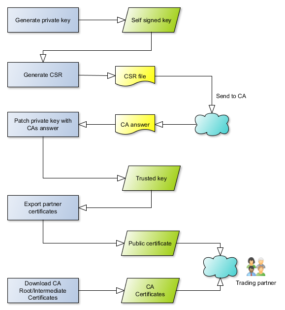
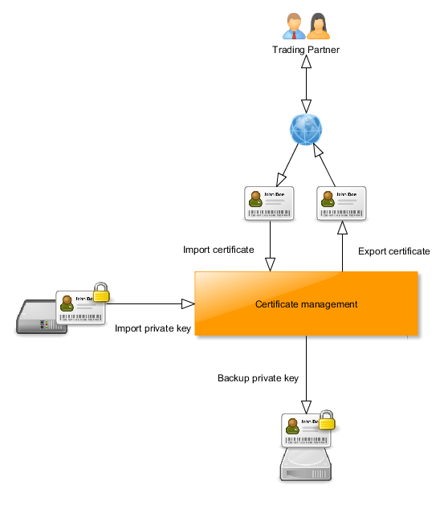

Keystores, Formate, Zertifikate und Schlüssel
Funktionen der Zertifikatverwaltung
Signatur und Verschlüsselung von Nachrichten
Verschlüsselung des Übertragungsweges
(https)
Schlüssel-/Zertifikattypen
Wildcard Zertifikate
Erstellung von Schlüsseln
Beglaubigte Schlüssel anfordern (CA)
Zertifikate erneuern(CA)
Import und Export von Schlüsseln und Zertifikaten
Hinweise zu Schlüsseln und Zertifikaten
Dateinameserweiterungen
PKCS
Sperrlisten
Weiterführende Links
Das unterliegende Übertragungsprotokoll erlaubt eine verschlüsselte
Übertragung von Daten über das Internet. Zudem lassen sich die Nachrichten
signieren und ebenfalls verschlüsseln. Die Mechanismen hierfür sind
die der PKI (Public-Key-Infrastruktur). Daher ist es notwendig, entsprechende
Schlüssel und Zertifikate von sich und seinem Partner vorzuhalten.
Das Arbeiten mit Sicherheit in der IT setzt leider einiges an technischem Hintergrundwissen
voraus. Bitte beachten Sie unter diesem Aspekt auch die weiterführenden
Links, um sich über dieses Thema zu informieren.
Dazu ist eine Schlüsselverwaltung in die mendelson Produkten integriert.
Die Terminologie im Client bezeichnet einen "Schlüssel" als den
private Schlüssel oder ein Schlüsselpaar (privater und öffentlicher
Schlüssel), während "Zertifikat" ein Zertifikat meint, in
das ein öffentlicher Schlüssel eines Partner eingebettet ist.
Achtung: Diese mendelson Software wird
mit einigen Testschlüsseln ausgeliefert. Verwenden Sie diese NIEMALS für
den produktiven Betrieb!
Sie benötigen für die Übermittlung von Daten unterschiedliche
Schlüssel und Zertifikate für die Transportsicherung, die Verschlüsselung
und die digitale Signatur.
Diese Schlüssel und Zertifikate werden in diesem mendelson Produkt auf
technischer Ebene intern gehalten, in der jeweils unterliegenden Datenbank. Es werden zwar auch immer Keystore Dateien ausgeliefert, diese dienen allerdings nur Backup Zwecken.
Es gibt
unterschiedliche Formate von Schlüsseln und Zertifikaten.
Das Einpflegen von Partnerzertifikaten
in Ihrer Zertifikatverwaltung kann somit durchaus ein komplexer Vorgang sein. Dies gilt insbesondere, wenn die von
Ihrem Partner gesandten Zertifikate in Formaten vorliegen, die nicht direkt
von dieser Software unterstützt werden.
Bitte beachten Sie, dass Sie Ihren private Schlüssel niemals an
Partner weitergeben dürfen. Sie werden auch keine private Schlüssel
Ihres Partners erhalten. Ausgetauscht werden zwischen den Kommunikationspartnern
immer nur Zertifikate.
Schützen Sie bitte Ihren private Schlüssel und erstellen Sie
sich ein Backup, das Sie an einem sicheren Ort aufbewahren.
Von Ihren Partner werden Sie in der Regel Zertifikatdateien bekommen, die CER
oder DER kodiert sind. Das läßt sich im Regelfall an
den Dateiendungen ablesen. Diese können Sie über die Importfunktion
der Zertifikatverwaltung importieren. Sie sind dann im System verfügbar
und müssen nur noch in der Partnerverwaltung dem Partner zugewiesen werden.
Zertifikate liegen in vielen unterschiedlichen Formaten vor. Wenn die Fähigkeiten
der integrierten Zertifikatverwaltung nicht ausreicht, um ein Zertifikat Ihres
Partners zu importieren, sprechen Sie bitte mit Ihrem Partner und bitten ihn,
das Zertifikat in einem anderen Format zur Verfügung zu stellen - das sollte allerdings nur sehr selten der Fall sein. Wenn dies
nicht möglich ist, müssten Sie versuchen, die Zertifikate Ihrer Partner
mit speziellen Programmen zu konvertieren. Ein wichtiges Softwarepaket in diesem
Umfeld ist OpenSSL. Es ist sehr mächtig, der Umgang damit ist jedoch auch
recht komplex, weil das Programm kommandozeilenbasiert ist.
Sie können mit der integrierten Zertifikatsverwaltung auch Schlüssel (nur für Backupzwecke) und Zertifikate (für Ihre Handelspartner) exportieren.
Bitte machen Sie sich mit den Möglichkeiten des Im- und Exports von Schlüsseln
und Zertifikaten in diesem Produkt vertraut. Da aus Sicherheitsgründen
Schlüssel nach bestimmter Zeit erneuert werden müssen (und damit auch
die Zertifikate), ist es immer wieder notwendig, Zertifikate zu ersetzen. In
der Regel wird jeder Schlüssel ein Mal pro Jahr ersetzt. Sie sollten aus
Sicherheitsgründen keine Zertifikate verwenden, die eine längere Gültigkeit
als drei Jahre besitzen.
Nach Ablauf eines Zertifikats oder eines Schlüssels kann dieser nicht mehr
benutzt werden. Sie sollten bereits vor dem Ablauf eines Schlüssels ein
neues Zertifikat bei Ihrer CA beantragen. Sie sollten mit Ihren Partnern einen
genauen Zeitpunkt und ein genaues Datum ausmachen, ab wann der neue Schlüssel
von Ihnen benutzt wird. Wenn es hier zu Abstimmungsproblemen kommt, kann es
passieren, dass einige Nachrichten abgewiesen werden, weil sie mit falschen
Schlüsseln verarbeitet wurden.
Sie werden auch von Ihren Partnern von Zeit zu Zeit neue Zertifikate erhalten
(oder einen Hinweis, wo Sie die Zertifikate herunterladen können). Bitte
achten Sie darauf, für jeden Partner immer die aktuell gültigen Zertifikate
zu verwenden, ansonsten kann kein Datenaustausch statt finden!
Leider benötigt man für den Umgang mit den Schlüsseln und den Zertifikates auch einiges an Hintergrundwissen: Wir empfehlen Ihnen die weiterführenden Links, die einen ersten Überblick über die benutzten kryprographischen Grundlagen vermitteln.
In den mendelson Produkten werden die Schlüssel und Zertifikate für unterschiedliche Aufgaben jeweils in einem eigenen Zertifikatmanager verwaltet. So gibt es einen TLS Zertifikatmanager für die TLS Anbindung und einen Signatur/Verschlüsselungs Zertifikatmanager für die Schlüssel und Zertifikate der Inhaltsverschlüsselung und Signatur. Sie werden also immer zwei Zertifikatmanager vorfinden.
Die Zertifikatmanager sind ein Pool verfügbarer Schlüssel und Zertifikate. Sobald ein Schlüssel/Zertifikat in der Zertifikatverwaltung ist, ist er dem System bekannt. Über den (graphischen) Client können die Zertifikate dann den jeweilgen Aufgaben zugeordnet werden, zum Beispiel den Partnern für die Verschlüsselung etc. Aus Sicherheitsgründen werden die privaten Schlüssel Ihres Systems nie an einen angebundenen graphischen Client weitergeleitet. Das führt zu einigen Unbequemlichkeiten - so können Sie zum Beispiel private Schlüssel nur in Verzeichnisse auf der Serverseite exportieren. Das bedeutet: auch wenn im Zertifikatmanager auf dem Client ihr privater Schlüssel angezeigt wird, ist er dort nicht vorhanden, sondern verbleibt auf Serverseite.
Bevor Sie mit Schlüsseln/Zertifikaten arbeiten können, müssen Sie diese in die jeweiligen Zertifikatverwaltung importieren.
In der mendelson Zertifikatverwaltung werden folgende Bilder verwendet:
| Partnerzertifikat oder Zertifikat Ihrer lokalen Station. Diese Zertifikate geben Sie bitte an Ihre Partner weiter. | |
| Eigener privater Schlüssel. Diesen dürfen Sie auf keinen Fall an einen Partner weitergeben. Sie signieren Ihre ausgehenden Nachrichten mit Ihrem privaten Schlüssel und entschlüsseln eingehende Nachrichten damit. | Root Zertifikat. Wenn Sie beglaubigte Zertifikate verwenden, die also über eine Certification Authority (CA) ausgegeben wurde, werden Sie auf diese Zertifikate treffen. |
| Fehlendes Zertifikat Wenn Sie auf dieses Icon treffen, fehlt ein Zertifikat in einer Zuordnung oder Beglaubigungskette |
Hinweis: Wenn ein Bild ausgegraut ist, bedeutet das, dass der zugehörige Schlüssel bzw das zugehörige Zertifikat nicht im Produkt verwendet wird.
| Certificate Authority: Alles, was mit der Beglaubigung eines Zertifikats zu tun hat. Hierüber können Sie auch abgelaufene Zertifikate/Schlüssel bei der CA erneuern. | |
| Erstellen eines neuen - zunächst self signed Schlüssels. Diesen können Sie dann später bei der mendelson CA beglaubigen lassen. | |
| Importieren Sie Zertifikate und private Schlüssel unterschiedlicher Formate in den Zertifikatmanager. | |
| Exportieren Sie Zertifikate für Ihre Partner und private Schlüssel für Ihr Backup | |
| Kopieren Sie einen Eintrag vom TLS Zertifikatmanager in den Verschlüsselungs/Signatur Zertifikatmanager oder umgekehrt | |
| Lassen Sie sich anzeigen, an welcher Stelle des mendelson Produktes ein Schlüssel bzw ein Zertifikat verwendet wird. Diese Funktion ist nur für die Signatur/Verschlüsslungs Verwaltung verfügbar. Sie können Zertifikate/Schlüssel nur auf dem Zertifikatmanager löschen, wenn sie nicht mehr an anderer Stelle im Produkt verwendet werden. | |
| Löschen Sie alle Einträge aus der Zertifikatverwaltung, die abgelaufen sind | |
| Löschen Sie einen einzelnen Eintrag aus der Zertifikatverwaltung. Das funktioniert nur, wenn der Schlüssel/das Zertifikat nicht mehr im Produkt verwendet wird | |
| Benennen Sie einen Alias eines Eintrags in der Zertifikatverwaltung um. Das hat keine funktionale Auswirkung auf das Produkt, die Einträge werden über ihren Fingerprint und nicht den Alias identifiziert | |
| Prüfen Sie die Sperrlisten der beglaubigten Zertifikate - ob diese noch gültig sind oder von der CA zurückgezogen wurden. |
Zu jedem Zertifikat können Sie im Zertifikatmanager alle relevanten Informationen einsehen - dorthin gelangen Sie durch die Reiter im unternen Bereich des Zertifikatmanagers. Dies sind:
Der Sender einer Nachricht benötigt jeweils einen privaten Schlüssel
für sich und einen öffentlichen Schlüssel seines Partners.
Eine Nachricht wird mit dem jeweiligen privaten Schlüssel signiert, dieser
sollte sich daher nur im Besitz des jeweiligen Senders befinden. Der öffentliche
Schlüssel dient zur Verifikation einer Signatur. Der gleiche Mechanismus
funktioniert auch beim Verschlüsseln.
Die öffentlichen Schlüssel sind vor der Übertragung entsprechend
auszutauschen. Um dem Partner seinen öffentlichen Schlüssel zu geben,
kann die Funktion "Zertifikat exportieren" in der GUI zum Verwalten
der Zertifikate benutzt werden. Um den öffentlichen Schlüssel (eingebettet
ins Zertifikat) seines Partners zu importieren, kann die Funktion "Schlüssel-Zertifikat
importieren" benutzt werden.
Jeder Schlüssel oder jedes Schlüsselpaar wird über einen Alias
adressiert, der beim Import zu vergeben ist. Bei den Partnerdefinitionen kann
dann jeweils dieser Alias ausgewählt werden.
Bitte beachten Sie, dass die meisten Schlüssel eine begrenzte Gültigkeit
haben, das sollten Sie von Zeit zu Zeit überprüfen. Das Ablaufdatum
ist in der GUI zur Schlüsselverwaltung ersichtlich. Wenn ein Schlüssel
abgelaufen ist, kann mit ihm nicht mehr gearbeitet werden, er ist ungültig.
Ein Nachrichtenaustausch kann nur signiert und/oder verschlüsselt stattfinden,
wenn beide beteiligten Parteien über die jeweils wechselseitig gleichen Zertifikate und
Schlüssel verfügen.
Der Übertragungsweg kann gesondert verschlüsselt werden (Transport Layer Security - TLS). Dies stellt keine Verschlüsselung/Sicherung der Daten dar, sondern nur eine Sicherung des Übertragungsweges.
Dazu sind die entsprechenden Zertifikate zum Senden von Nachrichten in den TLS Zertifikatmanager zu importieren. Es darf nur ein privater Schlüssel in diesem Zertifikatmanager sein - dieser wird dann als Ihr privater TLS Schlüssel verwendet.
Sie benötigen in der Regel für die Herstellung einer TLS Verbindung folgende Voraussetzungen:
Sind diese Voraussetzungen nicht erüllt, wird es zu einem sogenannten TLS Handshake Fehler kommen. Die dabei auftretenen Fehlermeldungen sind nicht immer besonders aussagekräftig. Meistens wird moniert, dass der Trust Pfad zum Stammzertifikat nicht gefunden werden konnte. Dann müssten Sie und Ihr Partner kontrollieren, dass auf beiden Seiten wirklich folgende Dinge vorliegen:
In Ihrem System:
Im System Ihres Partners muß die gleiche Konfiguration vorliegen, nur entsprechend anders herum.
Prinzipiell gibt es zwei verschiedene Arten von Schlüsseln/Zertifikaten:
"trusted" (beglaubigt) und "self-signed" (nicht beglaubigt).
Technisch sind diese Zertifikate identisch. Self-signed Zertifikate können
Sie selber ausstellen, während trusted Zertifikate in der Regel über
eine Certification Authority(CA) ausgegeben werden. mendelson-e-commerce GmbH
betreibt eine CA, sie ist erreichbar unter http://ca.mendelson-e-c.com/. Bitte
beachten Sie auch die weiterführenden Links zu diesem
Thema.
Preislich gibt es hierbei recht grosse Unterschiede. So gibt es einige CAs,
die die Schlüssel kostenlos ausgeben, bei anderen widerum zahlen Sie einen
entsprechenden jährlichen Betrag. Man kann bei den Schlüsseln über
sogenannte Extensions auch Nutzungsgebiete angeben, zum Beispiel "Verschlüsselung"
oder "Digitale Signatur". Auf technischer Ebene können Sie mit
jedem Schlüssel jede Operation ausführen, es gibt aber einige Softwarelösungen,
die Operationen mit Schlüsseln/Zertifikaten verweigern, die nicht die entsprechende
Extension gesetzt haben.
Extensions werden im vorliegenden Produkt ignoriert.
Einige Kommunikationspartner werden für die Anbindung nach beglaubigten
(trusted) Zertifikaten fragen, in der Regel reichen selbstsignierte Zertifikate
(self signed) aber aus.
Wenn Sie die Transportsicherung (SSL) verwenden, muß bei Ihrem Schlüssel
der "Common Name" (CN) Eintrag mit der Domain (Subdomain) übereinstimmen,
auf der die Serversoftware läuft. Wenn Sie den Schlüssel für
alle bzw mehrere Subdomains einer Domain verwenden möchten, können
Sie ein Wildcard Schlüssel erstellen. Es werden dann zum Beispiel die Subdomains
"as2.mydomain.net", "as4.mydomain.net" und "oftp2.mydomain.net"
geschützt. Da Sie statt vieler einzelner Zertifikate bei der Verwendung
von Wildcard Zertifikaten/Schlüsseln nur ein einzelnes Wildcard Zertifikat
benötigen, ist das für viele Unternehmen eine kosteneffektive und
effiziente Lösung.
Für Wildcard Zertifikate geben Sie bitte Ihren Common Name (CN) des zu
erzeugenen Schlüssels nach dem Schema "*.domain.de" an, dies
schützt dann wie beschrieben zum Beispiel "mail.domain.de", "www.domain.de"
und "www2.domain.de".
Achtung: Es schützt nicht "domain.de", "www.de.domain.de"
und "www.at.domain.de". Um auch "domain.de" zu schützen,
müssten Sie ein gesondertes einfaches Zertifikat erwerben.
Mehrstufige Wildcard-Zertifikate nach dem Schema "*.*.domain.de" werden
von keiner Zertifizierungsstelle (CA) angeboten, so können Sie zum Beispiel
für die Subdomain "www.xx.domain.de" nur Wildcards für "*.xx.domain.de"
erwerben, nicht jedoch für "*.*.domain.de".
Die mendelson CA unterstützt Wildcard Zertifikate ohne Aufpreis. Wenn Sie
Ihren Schlüssel bei einer anderen Zertifizierungsstelle als der mendelson
CA beglaubigen lassen möchten, stellen Sie bitte sicher, dass die CA diese
unterstützt und informieren Sie sich bitte über die entsprechenden
Tarife.
Hinweis: Bitte beachten Sie, dass es Verbindungspartner gibt, die Wildcard Zertifikate ablehnen.
Mit Hilfe der Zertifikatverwaltung können Sie sich selber Schlüssel
erstellen. Aus Sicherheitsgründen sollten Sie die Gültigkeitsdauer
nicht länger als ein Jahr (365 Tage) wählen. Nach der Erstellung des
Schlüssels ist er im System verfügbar. In der Oberfläche zur
Erstellung des Schlüssels gibt es zusätzliche Hinweise zum Erstellen
des Schlüssels.
Wenn Sie einen privaten Schlüssel erstellen, den Sie später beglaubigen
lassen möchten, spielt der bei der Erstellung angegeben Gültigkeitszeitraum
keine Rolle - auch der Einsatzzweck des Schlüssels wird während des
Beglaubigungsprozesses durch die CA gesetzt.
Bitte vergessen Sie nicht, ihn zu exportieren und entsprechend zu sichern
(bitte auch das Passwort merken).
Wenn Sie den Schlüssel erstellt haben, können Sie das entsprechende
Zertifikat exportieren und an Ihre Partner schicken. Bitte geben Sie Ihren persönlichen
Schlüssel niemals einem Partner oder Dritten weiter.
Wenn Sie ein Zertifikat wollen, das von einer CA trusted ist, müssen Sie
sich zunächst einen Schlüssel erstellen. Das funktioniert über
das Zertifikatmanagement.
Die meisten Beglaubigungsverfahren funktionieren so, dass die im Zertifikat
enthaltene Domain über das Senden einer Mail an eine Mailadresse auf dieser
Domain verifiziert wird - Sie sollten also auf jeden Fall eine Mailadresse auf
der enthaltenen Domain (CN) eingeben, die Sie erreichen können und die
auch gültig ist. Bitte geben Sie auf keinen Fall im Zertifikat eine Einwegmail
oder eine SPAM-/Trashmail an, ansonsten kann die Beglaubigung in der Regel nicht
durchgeführt werden.
Für diesen Schlüssel müssen Sie sich einen CSR (certificate signing
request) erstellen, den Sie an die CA schicken.
Darauf wird eine Antwort geschickt, damit patchen Sie ihren privaten Schlüssel
und erhalten so den Schlüssel, der jetzt über einen Trustpath mit
der CA verbunden ist.
Über diesen Mechanismus geben Sie niemals den privaten Schlüssel aus
der Hand, auch die CA verfügt nicht über ihn. Bitte erstellen Sie
sich eine Sicherheitskopie Ihres privaten Schlüssels und geben Sie Ihren
privaten Schlüssel niemals an Dritte weiter.

Im vorliegenden Produkt gehen Sie für die Durchführung dieser Schritte
folgendermassen vor:
Wenn Sie ein Zertifikat verwenden, das von einer CA beglaubigt ist, läuft dieses nach einer gewissen Zeit aus. In der Regel ist das ein Jahr. Hier gibt es nun die Möglichkeit, das Zertifikat zu erneuern. Sie können auch ein Zertifikat bei der mendelson CA erneuern, das vorher von einer anderen CA beglaubigt war. Dazu gehen Sie folgendermassen vor:
Keine Sorge - Dieser Vorgang wird das vorherige Zertifikt nicht löschen, sondern einen neuen Eintrag im keystore erstellen.
Sie können Zertifikate und Schlüssel aus dem Produkt exportieren
und auch Schlüssel importieren, die von externen Programmen generiert wurden.
Es ist auch möglich, Zertifikate Ihrer Partner zu importieren, die für
jede sichere Verbindung oder Übertragung zu oder von einem Ihrer Partner
erforderlich sind. Sobald die Zertifikate und Schlüssel im Zertifikatsmanager
verfügbar sind, können sie den Sicherheitsfunktionen des Partners
im Partner-Management zugeordnet oder für die TLS-Verbindung verwendet
werden.
Alle von Ihrem Partner gesendeten Zertifikate können über die Funktion
"Import" importiert werden. Die Importfunktion erkennt das
Importformat automatisch. Wenn ein Zertifikat nicht über den Importmechanismus
importiert werden kann, weil eine Fehlermeldung auftritt, wenden Sie sich bitte
an den mendelson Support.
Manchmal enthalten empfangene Zertifikatsdateien Ihrer Partner mehr als ein
Zertifikat (. p7b) - in diesem Fall können Sie mehrere Zertifikate aus
einer Datei importieren.
Private Schlüssel, die Sie importieren möchten, liegen in der Regel in einem Schlüsselspeicherformat
(JKS oder PKCS #12) vor. Wenn ein Keystore-Format importiert wird,
denken Sie bitte daran, dass der Keystore durch ein Passwort geschützt
ist (PKCS#12) oder sogar der Keystore mit einem Passwort und der mitgelieferte
Schlüssel mit einem anderen (JKS) - d.h. Sie benötigen das Keystore-Passwort
und (abhängig vom Format) das Keypasswort, um Schlüssel aus einer
Keystore-Datei zu importieren.
Wenn Sie den Schlüssel exportieren möchten, dann tun Sie dies bitte
nur zu Sicherungszwecken und geben Sie diese Schlüssel niemals an Dritte
weiter. mendelson-e-commerce GmbH wird niemals nach Ihren privaten Schlüsseln fragen!
Für jede Form der sicheren Kommunikation ist es nur notwendig, Ihrem Partner
den öffentlichen Teil Ihres Schlüssels zu geben, dafür gibt es
eine Funktion "Export". Hier gibt es unterschiedliche Formate
- bis auf das Format "SSH2" (was nur für SSH basierte Systeme
wie SFTP oder SCP verwendet wird) sollte Ihr Partner alle importieren können.
Wir würden Ihnen zum Weitergeben Ihres Zertifikats immer das Format .p7b (pkcs#7) empfehlen - dieses Format beinhaltet sowohl Ihr Endzertifikat als auch die gesamte Beglaubigungskette
bis zur CA.

Schlüssel und Zertifikate haben einige Kenndaten wie Schlüssellänge oder Signaturalgorithmus, bei denen Sie sich fragen könnten, warum man aus Sicherheitsgreünden nicht einfach immer die größte Schlüssellänge und den stärksten Signaturlagorithmus verwendet. Höhere Sicherheit hat allerdings auch Nachteile, diese liegen in der Verarbeitungsgeschwindigkeit. Wenn Sie zum Beispiel hohe Schlüssellängen wählen, werden sie eine Verlangsamung der Verarbeitung erkennen. Die Verarbeitungsgeschwindigkeit wächst nichtlinear mit der Schlüssellänge. Hier müssen Sie jeweils abwägen zwischen Geschwindigkeit und Sicherheit.
Es ist ausserdem zu beachten, dass ältere TLS Versionen with TLS 1.2 in manchen Implementierungen nicht mit SHA-3 512 oder SHA-2 512 signierten Schlüsseln umgehen können. Hier müssten Sie sich vor dem Einsatz der jeweilgen Schlüssel und Zertifikate bei Ihren Partnern erkundigen, was deren TLS Versionen unterstützen.
Wann immer Sie mit Zertifikaten oder Schlüsseln zu tun haben, werden Sie auf bestimmte Dateinamen treffen. Über die Dateinamenserweiterungen lässt sich im Regelfall das Format der Datei erkennen. Bitte beachten Sie, dass der Inhalt oder das Format der Dateien nicht zwingend über die Dateinamenserweiterungen herleitbar ist.
Achtung: Sie sollten an Ihre Partner keine PKCS#12 Dateien weitergeben, diese enthalten in der Regel Ihren privaten Schlüssel!
Wenn in dem jeweiligen Dateiformat private Schlüssel gespeichert sind, gibt es einen entsprechenden Passwortschutz, wenn man versucht, die Daten zu dekodieren.
Wenn Sie mit Ihrem Partner über Sicherheit der Übertragungen sprechen, könnten auch Begriffe zum "Public Key Cryptography Standard" fallen (PKCS). Die folgende Liste soll Ihnen helfen, die einzelnen PKCS zuzuordnen. Für eine detaillierte Liste können Sie auch unter http://de.wikipedia.org/wiki/PKCS schauen.
| Name | Kommentar | |
|---|---|---|
| PKCS#7 | Cryptographic Message Syntax Standard | Wird zum Signieren und/oder Verschlüsseln von Nachrichten genutzt. |
| PKCS#10 | Certification Request Standard | Format der Nachrichten, die zu einer CA (certification authority) gesendet werden, um die Zertifizierung eines Schlüsselpaares zu erfragen. |
| PKCS#12 | Personal Information Exchange Syntax Standard | Definiert ein Dateiformat (keystore), das dazu benutzt wird, private Schlüssel mit dem zugehörigen Zertifikat passwortgeschützt zu speichern. |
Eine Zertifikatsperrliste (certificate revocation list, CRL) ist eine Liste, die die Ungültigkeit von Zertifikaten beschreibt. Sie ermöglicht es, festzustellen, ob ein Zertifikat von der jeweiligen CA gesperrt oder widerrufen wurde und warum. Daher gibt es Sperrlistenabfragen auch nur für beglaubigte Zertifikate.
Zertifikate werden in der Regel gesperrt oder widerrufen, wenn deren zugehörige Schlüssel zum Beispiel nicht mehr sicher sind, weil sie in falsche Hände geraten sind. In solchen Fällen muss das Zertifikat noch vor dem eigentlichen Ablaufdatum gesperrt werden, damit der zugehörige Schlüssel nicht weiter verwendet wird.
Die CA verwaltet für diese Fälle eine Sperrliste, die über den mendelson Zertifikatmanager abgefragt werden kann. Damit das funktioniert, muss der Serverprozess in der Lage sein, die jeweilige URL der Sperrliste eines jeden Zertifikats zu erreichen - dies ist in der DMZ in der Regel nicht möglich.
Technisch ist in jedem beglaubigten Zertifikat über eine optionale Zertifikatserweiterung eine URL gespeichert, die Informationen zur Sperrliste beinhaltet. Es gibt hier in der Regel die Möglichkeiten des Zugriffs via HTTP, FTP oder LDAP (RFC 2587). Diese URL wird verfolgt und die Sperrliste analysiert.
Certificate Authority, beglaubigtes Zertifikat beantragen: http://ca.mendelson-e-c.com
Privater Schlüssel: http://de.wikipedia.org/wiki/Privater_Schl%C3%BCssel
Öffentlicher Schlüssel: http://de.wikipedia.org/wiki/%C3%96ffentlicher_Schl%C3%BCssel
Zertifikate: http://de.wikipedia.org/wiki/Digitales_Zertifikat
Certificate Authority (CA): http://de.wikipedia.org/wiki/Certificate_Authority
Self signed certificates (engl.): http://en.wikipedia.org/wiki/Self-signed_certificate
Public Key Verfahren: http://de.wikipedia.org/wiki/Public-Key-Verfahren
Symmetrisches Kryptosystem: http://de.wikipedia.org/wiki/Symmetrisches_Kryptosystem
| Last modified: $Date: 11/03/25 9:18 $ |